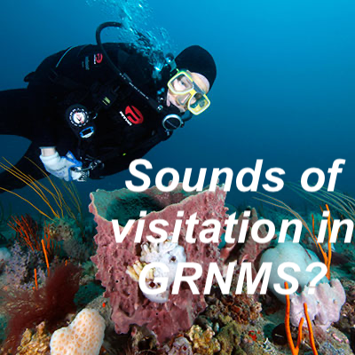

Click on an element to see & hear more.
Here is a map of listening device locations. Hover on a location to see its site id and click on it to see the rationale for its placement.
Click here to learn more about how we listened to and recorded soundscapes.
Click here to see similar maps of the listening range for the other hydrophones in this sanctuary and in other sanctuaries.
Spectrogram: intensity of different pitches over time
Streamplot: loudness and contribution of different pitches
Power spec: variability of loudness across pitch
Anomaly plot: deviation of loudness from average
Click here to learn more about what we measured and how to read and understand these summary graphs.
Click here to see similar summary graphs for the other stations in this sanctuary and here for data available in other sanctuaries.
